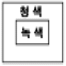
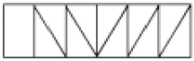

실내건축산업기사 (2005-03-06 기출문제)
1과목: 실내디자인론
1. 점차적인 변화와 질서방법을 요구하며, 연속과 절제를 통해 진보감을 느낄 수 있으며 시각적으로 경쾌한 율동감을 가질 수 있는 디자인의 구성원리는?
- 강조
- 점진
- 균형
- 대립
(정답률: 84%)

2. 다음 중 상업공간의 기획단계에 해당되는 항목과 가장 관계가 먼 것은?
- 경제성의 타당성 검토
- 교통ㆍ상품 파악
- 고객 분석
- 디스플레이방법 결정
(정답률: 49%)
3. 1920년대 파리에서 열렸던 전시회들에 그 기원을 두고 있으며 기본형태의 반복, 동심원, 지그재그 등 기하학적인 것에 대한 취향이 두드러지게 나타난 양식은?
- 아트 앤 크래프트
- 아방가르드
- 아르데코
- 아르누보
(정답률: 30%)
4. 다음 중 가구배치시 유의할 사항과 거리가 가장 먼 것은?
- 가구는 실의 중심부에 배치하여 돋보이도록 한다.
- 사용목적과 행위에 맞는 가구배치를 해야 한다.
- 전체공간의 스케일과 시각적, 심리적 균형을 이루도록 한다.
- 문이나 창문이 있을 경우 높이를 고려한다.
(정답률: 84%)
5. 다음 중 6층 규모의 백화점 매장계획에 있어서 1층에 진열되는 상품으로 가장 적합하지 않은 것은?
- 악세사리
- 화장품
- 구두
- 가구
(정답률: 86%)
6. 가구배치의 기본형에 대한 설명 중 옳지 않은 것은?
- 직선형 - 일렬로 의자를 배치하는 방법으로 대화에는 부자연스러운 배치이다.
- ㄱ자형 - 단란한 분위기에 적합한 형태이다.
- ㅁ자형 - 대화를 많이 하는 장소에 적당하므로 식탁형이라 하기도 한다.
- 대면형 - 여러형을 복합적으로 편성한 배치로 가족 중심의 거실용으로 적당하다.
(정답률: 62%)
7. 실내계획에 있어서 그리드 플래닝(grid planning)을 적용하는 전형적인 프로젝트는?
- 사무소
- 미술관
- 주택
- 레스토랑
(정답률: 77%)
8. 검토 단계에서 생활 기능적 요구와 공간과의 관련을 종합적으로 살펴 보고자 하는 한 과정으로서 실내공간의 대상모델이라 말할 수 있는 것은?
- 전개도
- 동선도
- 에스키스
- 기능도
(정답률: 32%)
9. 상점의 동선계획에 관한 설명 중 옳지 않은 것은?
- 고객 동선은 가능한 짧고 간단하게 하는 것이 이상적이다.
- 종업원 동선은 작업의 효율성과 피로의 감소를 고려하여 계획한다.
- 상품 동선은 상품의 반ㆍ출입, 보관, 포장, 발송 등과 같은 상점 내에서 상품이 이동하는 동선이다.
- 동선 계획은 평면 계획의 기본 요소로 기능적으로 역할이 서로 다른 동선은 교차되거나 혼용되어서는 안된다.
(정답률: 85%)
10. 실내 색채계획에 대한 설명으로 옳지 않는 것은?
- 실내의 색채 계획은 건물의 외관을 위한 색채보다 훨씬 미묘하고 섬세한 색채 감각을 요구한다.
- 통념적인 색채 조화론을 떠나 보다 인상적인 색채환경을 구축하기 위해 과감한 대비효과를 시도할 필요가 있다.
- 색채 계획은 대부분이 조명, 주변정리가 완결된 상황에서 이루어진다.
- 실내에서의 색채는 일광 속에 있는 건축의 조건보다는 대체로 인공 조명 속에 있는 조건에 제한성을 갖는다.
(정답률: 44%)
11. 대상의 지각에 관한 설명 중 옳지 않은 것은?
- 과거에 경험했던 형태가 빠르게 지각된다.
- 복잡한 형태보다는 단순한 형태가 쉽게 인식된다.
- 익숙한 형태가 처음 접하는 형태보다 쉽게 식별된다.
- 요소와 구조가 겹치고 섞여 있으면 형태의 지각은 빠르다.
(정답률: 84%)
12. 질감에 대한 설명 중 옳지 않은 것은?
- 질감의 선택시 고려해야 할 사항은 스케일, 빛의 반사와 흡수, 촉감 등의 요소이다.
- 질감은 만져서만 느껴지는 디자인 요소이다.
- 유리, 거울 같은 재료는 높은 반사율을 나타내며 차갑게 느껴진다.
- 질감은 실내디자인을 통일시키거나 파괴할수도 있는 중요한 디자인 요소이다.
(정답률: 83%)
13. 공간의 레이아웃(lay-out)과정에서 고려하지 않아도 좋은 것은?
- 공간별 그루핑
- 동선
- 가구의 크기와 점유면적
- 재료의 마감과 색채계획
(정답률: 72%)
14. 다음 중 곡선이 주는 느낌과 가장 거리가 먼 것은?
- 우아함
- 안정감
- 유연함
- 부드러움
(정답률: 82%)
15. 다음 중 3차원의 형상에 대한 설명으로 알맞은 것은?
- 면과 선의 교차에서 나타난다.
- 2차원적 형상에 깊이나 볼륨을 더하여 창조된다.
- 어떤 형상을 규정하거나 한정하고, 면적을 분할한다.
- 삼각형, 사각형, 다각형, 원, 기타 기하학적 형태로 존재한다.
(정답률: 73%)
16. 다음 중 비정형균형에 대한 설명으로 옳은 것은?
- 단순하고 엄숙하며 완고하고 변화가 없는 정적인 것이다.
- 대칭의 구성 형식이며, 가장 완전한 균형의 상태이다.
- 좌우대칭, 방사대칭으로 주로 표현된다.
- 물리적으로는 불균형이지만 시각상으로 힘의 정도에 의해 균형을 이룬 것이다.
(정답률: 86%)
17. 실내계획에 있어 모듈(Module)시스템의 효과에 대한 설명으로 옳지 않은 것은?
- 재료절감과 경제적 시공
- 시공기간의 연장
- 대량생산의 가능
- 설계작업의 단순화
(정답률: 87%)
18. 다음 중 소파에 대한 설명으로 옳지 않은 것은?
- 체스터필드는 소파의 골격에 쿠션성이 좋도록 솜, 스폰지 등의 속을 많이 채워 넣고 천으로 감싼 소파이다.
- 세티는 동일한 두 개의 의자를 나란히 합해 2인이 앉을 수 있도록 한 것이다.
- 2인용 소파는 암체어라고 하며 3인용 이상은 미팅시트라 한다.
- 카우치는 고대 로마시대 음식물을 먹거나 잠을 자기위해 사용했던 긴 의자이다.
(정답률: 40%)
19. 벽의 높이에 따른 효과에 대한 설명으로 옳은 것은?
- 60㎝ 정도 높이의 벽 : 두 공간을 상징적으로 분리ㆍ구분
- 가슴높이의 벽 : 에워싼 느낌이 강하여 하나의 실의 성격을 갖는 공간을 형성
- 눈높이의 벽 : 공간의 영역을 완전히 차단
- 키보다 높은 벽 : 주변공간에 시각적인 연속성을 주면서 감싸인 분위기 조성
(정답률: 39%)
20. 다음 중 업무공간의 조명계획에 대한 설명으로 옳지 않는 것은?
- 눈의 피로와 자극을 피하기 위해서는 사무실 내부의 밝기가 어느 정도 균일해야 한다.
- 오피스 디자인에서 자연광의 위치는 각 실을 배치에 영향을 준다.
- 회의실은 오피스 사무공간보다 조도를 낮추면 안정감 있는 공간 분위기가 연출된다.
- 일반적으로 사무실에서는 그림자가 생기지 않으며 사용 수명이 길고 효용성이 높은 백열등이 주로 사용된다.
(정답률: 36%)
2과목: 색채 및 인간공학
21. 작업 환경에 관한 문제로 인간공학과 연관이 있는 것 중 비교적 거리가 먼 것은?
- 진동, 가속도, 멀미
- 색채, 온도, 조명
- 환기, 습도
- 계절, 유행
(정답률: 77%)
22. 다음 중 경보하는 방법으로 가장 적절하지 않은 것은?
- 여성의 목소리는 흔하지 않는 환경에서 주의를 환기시키는데 효과적이다.
- 음과 빛을 혼합하여 알린다.
- 급박한 상황이므로 취해야 할 조처보다는 비상사태임을 알리기에 충분하다.
- 사태의 단계에 따라 서로 다른 경보를 제시한다.
(정답률: 48%)
23. 인체의 피부면에 가장 넓게 분포되어 있는 감각은?
- 열각
- 통각
- 압각
- 냉각
(정답률: 80%)
24. 손의 치수 및 모양에 대한 측정은?
- 형태학적 측정
- 구조운동학적 측정
- 생리학적 측정
- 능력학적 측정
(정답률: 52%)
25. 감시용 다이얼 계기를 동시에 여러개 배치하고자 할 때의 배치방법 중 잘못된 것은?
- 수직으로 배열할 때는 지침이 12시 방향으로 향하게 한다.
- 6개 이상일때는 되도록 일렬로 배열한다.
- 수평으로 배열할 때는 지침이 9시 방향으로 향하게 한다.
- 모든 계기의 지침은 같은 방향이 되게 한다.
(정답률: 30%)
26. 작업장에서 그림자와 눈부심(Glare)을 해결하기 위한 가장 이상적인 조명방법은?
- 자연광
- 직접조명
- 확산조명
- 간접조명
(정답률: 61%)
27. 관절운동에 관계된 용어설명으로 옳은 것은?
- 굴곡 - 신체부분을 좁게 구부리거나 각도를 좁히는 동작
- 신전 - 신체의 중앙쪽으로 회전하는 동작
- 내전 - 신체의 중앙이나 신체의 부분이 붙어있는 부분에서 멀어지는 방향으로 움직이는 동작
- 외전 - 신체의 부분이나 부분의 조합이 신체의 중앙이나 그것이 붙어있는 방향으로 움직이는 동작
(정답률: 48%)
28. 청각에 해당되지 않는 것은?
- 음의 밀도
- 음의 시간적 간격
- 음의 균일성
- 음의 높이
(정답률: 27%)
29. 다음 중 작업공간(work space)를 결정하는데 가장 편리한 방법은?
- 마네킹을 이용하는 방법
- 이론적 인체 계측방법
- 스트로브법
- 이중 플래니미터법
(정답률: 31%)
30. 1촉광의 점광원으로부터 1m 떨어진 곡면에 비추는 광의 밀도는?
- foot-candle(ft)
- lux
- lumen
- nt
(정답률: 75%)
31. 보색에 관한 설명 중 잘못된 것은?
- 색상환에서 서로 반대쪽에 위치한 색이다.
- 서로 돋보이게 해주므로 주제를 살리는데 효과가 있다.
- 주목성이 강하다.
- 인접색으로 서로 보완해 준다.
(정답률: 68%)
32. 빨강, 노랑, 파랑 등과 같이 어떤 색을 다른 색과 구분하는 속성은?
- 채도
- 색도
- 순도
- 색상
(정답률: 81%)
33. 색채의 온도감에 대한 설명 중 맞는 것은?
- 색채의 온도감은 색상에 의한 효과가 가장 강하다.
- 파장이 짧은 쪽이 따뜻하게 느껴진다.
- 보라색, 녹색 등은 한색계의 색이다.
- 검정색보다 백색이 따뜻하게 느껴진다.
(정답률: 69%)
34. 그림과 같이 청색면으로 둘러싸인 녹색면은 실제보다 어떻게 달라져 보일까?

- 청색기미를 띠어 보인다.
- 황색기미를 띠어 보인다.
- 자주색기미를 띠어 보인다.
- 적색기미를 띠어 보인다.
(정답률: 31%)
35. 다음 색채가 지닌 연상 감정 중 희망, 광명, 팽창 등의 느낌을 갖게 하는 색은?
- 보라
- 연두
- 자주
- 노랑
(정답률: 70%)
36. 두 가지 이상의 색을 목적에 알맞게 조화되도록 만드는 것을 무엇이라고 하는가?
- 배색
- 대비조화
- 유사조화
- 대비
(정답률: 57%)
37. 사람의 눈으로 지각되는 가시광선의 범위는?
- 250㎚∼550㎚
- 300㎚∼600㎚
- 380㎚∼780㎚
- 420㎚∼820㎚
(정답률: 62%)
38. 의사가 수술도중 시선을 벽면으로 옮길 때 생기는 피의 잔상을 막기 위한 벽면 색으로 가장 적합한 것은?
- 주황색
- 보라색
- 청록색
- 빨강색
(정답률: 96%)
39. 먼셀 색입체에 관한 설명 중 옳지 않은 것은?
- 먼셀의 색입체를 color tree라고도 부른다.
- 물체색의 색감각 3속성으로 색상(H), 명도(V), 채도(C)로 나눈다.
- 무채색을 중심으로 등색상 삼각형이 배열되어 복원추체 색입체가 구성된다.
- 세로축에는 명도(V), 주위의 원주상에는 색상(H), 중심의 가로축에서 방사상으로 늘이는 추를 채도(C)로 구성한다.
(정답률: 58%)
40. 다음 배색 중 가장 큰 대비적 조화는?
- 빨강, 노랑
- 주황, 연두
- 녹색, 남색
- 노랑, 남색
(정답률: 87%)
3과목: 건축재료
41. 얇은 강판에 마름모꼴의 구멍을 연속적으로 뚫어 그물처럼 만든 것으로 천장, 벽 등의 미장 바탕에 사용되는 것은?
- 메탈폼
- 메탈라스
- 논슬립
- 코어비드
(정답률: 74%)
42. 목재의 화재위험온도(인화점)는 평균 얼마 정도인가?
- 160℃
- 240℃
- 330℃
- 450℃
(정답률: 57%)
43. 점토의 종류와 제품과의 관계를 나타내고 있다. 부적절한 것은?
- 토기 - 벽돌
- 도기 - 내장타일
- 석기 - 외장타일
- 자기 - 기와
(정답률: 58%)
44. 알루미늄의 성질에 대한 설명 중 옳지 않은 것은?
- 비중이 철의 1/3 정도로 경량이다.
- 열ㆍ전기전도성이 크고 반사율이 높다.
- 열팽창율은 철과 거의 비슷하며 내화성이 크다.
- 융점이 낮기 때문에 용해주조도가 좋다.
(정답률: 47%)
45. 다음 석재 중 내화도가 가장 큰 것은?
- 사문암
- 대리석
- 화강암
- 응회암
(정답률: 29%)
46. 목재 가공 제품 중 집회장, 강당, 영화관, 극장 등의 천장 또는 내벽에 붙여 음향조절 효과와 장식효과를 내기 위해 사용하는 것은?
- 파키트리 보드(parquetry board)
- 플로링 보드(flooring board)
- 코펜하겐 리브(copenhagen rib)
- 파키트리 패널(parquetry panel)
(정답률: 73%)
47. 절대건조비중(r)이 0.69인 목재의 공극률은?
- 31.0%
- 44.8%
- 55.2%
- 69.0%
(정답률: 31%)
48. 성분 중에 알루민산철3석회를 극히 적게 한 것으로 소량의 안료를 첨가하면 여러 가지 색깔을 낼 수 있는 시멘트는?
- 마그네시아 시멘트
- 보통 포틀랜드시멘트
- 백색 포틀랜드시멘트
- 실리카 시멘트
(정답률: 76%)
49. 다음 중 대기 중의 이산화탄소와 화합해서 경화하는 기경성 미장재료는?
- 시멘트 모르타르
- 석고 플라스터
- 돌로마이트 플라스터
- 인조석 바름
(정답률: 57%)
50. 도료와 적응장소의 연결이 가장 옳지 않은 것은?
- 유성바니시 - 목부
- 알루미늄페인트 - 알칼리성바탕
- 멜라민수지도료 - 철부
- 수성도료 - 목부, 알칼리성바탕
(정답률: 55%)
51. 속빈 콘크리트 블록의 두께 치수가 옳지 않은 것은? (한국산업규격)
- 100mm
- 130mm
- 150mm
- 190mm
(정답률: 53%)
52. 다음 중 열가소성 수지가 아닌 것은?
- 염화비닐수지
- 아크릴수지
- 멜라민수지
- 폴리에틸렌수지
(정답률: 34%)
53. 유리를 600℃ 이상의 연화점까지 가열하여 특수한 장치로 균등히 공기를 내뿜어 급랭시킨 것으로 강하고 또한 파괴되어도 세립상으로 되는 유리는?
- 겹친유리
- 강화유리
- 망입유리
- 복층유리
(정답률: 63%)
54. 다음의 아스팔트 제품에 대한 설명 중 옳지 않은 것은?
- 아스팔트유제는 블론아스팔트를 용제에 녹인 것으로 아스팔트 방수의 바탕처리재로 이용된다.
- 아스팔트블록은 아스팔트모르타르를 벽돌형으로 만든 것으로 화학공장의 내약품 바닥마감재로 이용된다.
- 아스팔트싱글은 모래붙임루핑에 유사한 제품을 석면플레이트판과 같이 지붕재료로 사용하기 좋은 형으로 만든 것이다.
- 아스팔트펠트는 유기천연섬유 또는 석면섬유를 결합한 원지에 연질의 스트레이트아스팔트를 침투시킨 것이다.
(정답률: 16%)
55. 다음 중 시멘트의 안정성 측정 시험법은?
- 오토클레이브 팽창도 시험
- 브레인법
- 표준체법
- 슬럼프 시험
(정답률: 49%)
56. 콘크리트 배합에 대한 설명 중 옳지 않은 것은?
- 배합강도는 표준양생, 재령28일 공시체의 압축강도로 표시하는 것을 원칙으로 한다.
- 콘크리트의 요구성능은 주로 시공성, 강도 및 내구성이 된다.
- 일반적으로 배합조건은 배합강도, 슬럼프 및 공기량으로 정하고, 경량 콘크리트인 경우 콘크리트 온도가 추가된다.
- 물시멘트비는 물과 시멘트의 중량 백분율로 물시멘트비의 최대 영향인자는 압축강도이다.
(정답률: 41%)
57. 금속제 용수철과 완충유와의 조합작용으로 열린문이 자동으로 닫혀지게 하는 것으로 바닥에 설치되며, 일반적으로 무게가 큰 중량창호에 사용되는 것은?
- 레버터리 힌지
- 플로어 힌지
- 피봇 힌지
- 도어 클로우저
(정답률: 28%)
58. 도장재료에 대한 설명 중 옳지 않은 것은?
- 합성수지 에나멜페인트 중 염화비닐 에나멜은 콘크리트 정도의 약알칼리에는 침식되지 않는다.
- 유성조합페인트는 붓바름작업성 및 내후성이 뛰어나다.
- 유성페인트는 보일유와 안료를 혼합한 것을 말한다.
- 수성페인트는 광택이 있고 마감면의 마모가 거의 없다.
(정답률: 58%)
59. 두께가 얇은 시트를 만들어 건축용 방수재료로 이용되며, 내화학성의 파이프로도 쓰이지만, 도료로서의 사용은 곤란한 합성수지는?
- 에폭시 수지
- 폴리에틸렌 수지
- 염화비닐 수지
- 요소 수지
(정답률: 16%)
60. 미장재료에 관한 설명 중 옳지 않은 것은?
- 회반죽에 석고를 약간 혼합하면 수축균열을 방지할 수 있는 효과가 있다.
- 회반죽은 소석회에 모래, 해초풀, 여물 등을 혼합하여 바르는 미장재료로서 목조바탕, 콘크리트블록 및 벽돌 바탕 등에 바른다.
- 돌로마이트 플라스터는 소석회에 비해 점성이 높고 작업성이 좋다.
- 무수석고는 가수후 급속경화하지만, 반수석고는 경화가 늦기 때문에 경화촉진제를 필요로 한다.
(정답률: 34%)
4과목: 건축일반
61. 그림과 같은 트러스의 명칭은?

- 평하우트러스
- 평프랫트러스
- 와렌트러스
- 핑크트러스
(정답률: 47%)
62. 서양건축의 시대 순서가 옳게 배열되어 있는 것은?
- 로마양식 - 로마네스크 - 바로크 - 고딕 - 르네상스
- 로마네스크 - 비잔틴 - 로마양식 - 르네상스 - 고딕
- 비잔틴 - 고딕 - 로마양식 - 로마네스크 - 바로크
- 로마양식 - 비잔틴 - 로마네스크 - 고딕 - 르네상스
(정답률: 37%)
63. 서양 고전건축에서 엔타블레이처(Entablature)의 구성요소가 아닌 것은?
- 페디먼트(Pediment)
- 아키트레이브(Architrave)
- 프리즈(Frieze)
- 코니스(Cornice)
(정답률: 20%)
64. 다음 중 지하실에 드라이 에어리어를 설치하는 목적으로 가장 적당한 것은?
- 방수, 내진
- 방수, 통풍
- 단열, 방수
- 단열, 채광
(정답률: 55%)
65. 다음 중 철근콘크리트구조에서 철근을 콘크리트로 피복하는 이유로 가장 부적절한 내용은?
- 철근의 방청
- 철근의 내화피복
- 철근의 부착력유지
- 철근의 좌굴방지
(정답률: 30%)
66. 한국 전통 건축의 의장적 특징이 아닌 것은?
- 기둥의 배흘림
- 기둥의 안쏠림
- 창호의 황금비
- 처마곡선의 후림과 조로
(정답률: 44%)
67. 다음 소방시설 중 소화설비가 아닌 것은?
- 비상경보설비
- 스프링클러설비
- 옥외소화전설비
- 소화기구
(정답률: 68%)
68. 건축물에 설치하는 지하층의 비상탈출구에 관한 기준 중 부적합한 것은?
- 비상탈출구의 유효너비는 0.9m 이상으로 하고, 유효높이는 1.2m 이상으로 할 것
- 비상탈출구는 출입구로부터 3m 이상 떨어진 곳에 설치할 것
- 지하층의 바닥으로부터 비상탈출구의 아랫부분까지의 높이가 1.2m 이상이 되는 경우에는 벽체에 발판의 너비가 20㎝ 이상인 사다리를 설치할 것
- 비상탈출구의 문은 피난방향으로 열리도록 하고, 내부 및 외부에는 비상탈출구의 표시를 할 것
(정답률: 34%)
69. 건축허가등을 함에 있어서 미리 소방본부장 또는 소방서장의 동의를 받아야 하는 건축물은 연면적 얼마 이상의 건축물인가?
- 150m2
- 330m2
- 400m2
- 500m2
(정답률: 38%)
70. 건축물의 내부에 설치하는 피난계단의 구조에 대한 설명중 잘못된 것은?
- 계단실은 창문ㆍ출입구 기타 개구부를 제외한 당해 건축물의 다른부분과 내화구조의 벽으로 구획할 것
- 계단은 내화구조로 하고 피난층 또는 지상까지 직접 연결되도록 할 것
- 계단실에는 예비전원에 의한 조명설비를 할 것
- 계단실 및 반자의 실내에 접하는 부분의 마감(마감을 위한 바탕을 포함)은 난연재료로 할것
(정답률: 63%)
71. 다음 중 내화구조로 하지 않아도 되는 것은?
- 숙박시설의 객실간의 간막이벽
- 기숙사의 침실간의 간막이벽
- 업무시설의 사무실간의 간막이벽
- 의료시설의 병실간의 간막이벽
(정답률: 40%)
72. 철골조에서 웨브에 철판을 쓰고 상,하부에 플랜지 철판을 용접하거나 ㄱ자형강을 리벳 접합한 보는?
- 판보
- 격자보
- 형강보
- 래티스보
(정답률: 33%)
73. 우리나라에 현존하는 목조 건축물 가운데 가장 오래 된 것은?
- 수덕사 대웅전
- 부석사 무량수전
- 불국사 대웅전
- 봉정사 극락전
(정답률: 62%)
74. 목구조에 대한 설명으로 틀린 것은?
- 샛기둥은 본기둥 사이에 벽체를 이루는 것으로서, 가새의 옆휨을 막는데 유효하다.
- 층도리와 평행하게 보 위에 가로 질러 대는 부재는 토대이다.
- 인방은 기둥과 기둥에 가로대어 창문틀의 상하벽을 받고 하중은 기둥에 전달하며 창문틀을 끼워대는 뼈대가 되는 것이다.
- 창문의 상하 홈대 사이에 세워댄 것을 벽선 또는 문설주라 한다.
(정답률: 41%)
75. 표준형 시멘트벽돌을 사용하여 한장반 쌓기(1.5B)로 할때 벽 두께로 옳은 것은? (공간쌓기 아님)
- 260㎜
- 290㎜
- 310㎜
- 320㎜
(정답률: 72%)
76. 조적구조를 보강하는데 부적당한 사항은?
- 칸막이벽을 내력벽(耐力壁)으로 쌓았다.
- 벽체의 하중경감을 위하여 개구부를 많이 설치하였다.
- 부축벽 또는 붙임기둥을 설치하였다.
- 벽량(壁量)을 크게 하였다.
(정답률: 53%)
77. 우리 나라 전통건축물에 사용되는 단청에 대한 다음 설명중 틀린 것은?
- 단청에 사용되는 색은 흔히 오방색(五方色)으로 일컫는 청색, 백색, 적색, 흑색 및 황색을 주로 사용한다.
- 단청은 목조건축물이외에 고분, 공예품 등에도 사용하였으며 서화에 병용되기도 하였다.
- 단청은 건물의 미화와 내구적인 보호를 위해 사용되었다.
- 단청기법에는 모로단청, 금단청, 가칠단청이 사용되었으며 이 가운데 가장 복잡, 화려한 것은 모로단청이다.
(정답률: 50%)
78. 다음 중 고딕 건축과 가장 관계가 먼 것은?
- 장미창(rose window)
- 첨두아치(pointed arch)
- 미나렛(minaret)
- 플라잉버트레스(flying buttress)
(정답률: 47%)
79. 다음 중 규모와 관계없이 거실의 벽 및 반자의 실내에 접하는 부분의 마감을 불연재료 또는 준불연재료로 하여야 하는 것은?
- 독서실
- 공동주택
- 노래연습장
- 의료시설
(정답률: 35%)
80. 건축물의 건축허가를 신청하거나 용도변경신고시 에너지절약계획서를 제출하는 대상 건축물이 아닌 것은?
- 50세대 이상인 공동주택(기숙사는 제외)
- 의료시설 중 병원, 숙박시설로서 당해 용도에 사용되는 바닥면적의 합계가 2,000m2 이상인 건축물
- 제1종 근린생활시설 중 일반목욕장, 운동시설 중 실내 수영장으로서 당해용도에 사용되는 바닥면적의 합계가 1,000m2 이상인 건축물
- 판매 및 영업시설 중 도,소매시장 및 상점으로서 중앙집중식 냉ㆍ난방설비를 설치하고 당해용도에 사용되는 바닥면적의 합계가 3,000m2 이상인 건축물
(정답률: 37%)